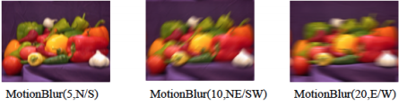

Getting Started with FlashPhoto
FlashPhoto is a photo editing program with a few basic features. The most important features of FlashPhoto, and the ones that this tutorial is concerned with, are the various brushes, tools, and filters that can be applied to the canvas.
There are 7 different tools in FlashPhoto, each with a unique size, shape, and coloring method; while these three parameters are fixed for most tools, the color of a few of these can be changed using the color menu. The color is specified by entering the amount for each of the color channels (red/green/blue) as decimal values between 0 and 1. Each of the tools available is listed below, along with some basic information about how it can be used.
- The Pen is a basic drawing tool; it applies a single dot if the user clicks the canvas once, and it applies a solid, fine line if the user clicks and drags the mouse across the canvas. The Pen’s color can be changed as desired.
- The Spray Can is a brush that applies a digital spray of paint to a small, concentrated area of the canvas. If the user just clicks on the canvas with the Spray Can, a single circular spray of paint will be applied. If the user clicks and drags the tool across the canvas, a line of sprayed paint will be applied to the canvas. Furthermore, a user can make the spray thicker by repeatedly applying the Spray Can to the same area. Just as with the pen, the color of the Spray Can can be changed as desired.
- The Calligraphy Pen is similar to the standard Pen tool in that it applies a solid mark to the canvas, but it differs from the Pen tool in that it applies to a much bigger area. The Calligraphy Pen is shaped like a large rectangle, and just like the pen will apply once if the user merely clicks on the canvas, but will apply in a line if the user clicks and drags the tool. The Caligraphy Pen’s color can be changed using the color menu.
- The Highlighter is shaped the exact same as the Calligraphy Pen (a large rectangle), but it is different in the way its color is applied to the canvas. The Highlighter tool, when applied, will apply its color lightly to the canvas, so that what’s underneath will show through the color of the Highlighter, just as a real highlighter would. Just as with the previous tools mentioned, the color of the highlighter can be changed using the color menu.
- The Eraser is true to its name: it erases everything in the area it is applied to and restores the color to the original canvas background. The Eraser will remove everything in its path, including colors painted using other tools and images loaded to the canvas. Unlike the tools above, the eraser’s color cannot be changed, since it always restores color to the canvas background.
- The Stamp tool is unique in that its size can vary; it will always be the size of whatever image is loaded in. To load a new stamp, the user must select an image using the Image I/O Menu, then click the “Load stamp” button. Once an image has been loaded to the Stamp, the user can apply the stamp anywhere by merely clicking on the canvas. The stamp will always apply with the center of the image located where the user clicks. There is no strict limit on how large a stamp image can be, but if it is too large the image may not be entirely visible on the canvas. The color of a stamp cannot be changed, since its colors are specified by the image that is loaded into it.
- - The Blur tool produces the same effect as the blur filter (more on that below), but only to a small, specified area of the canvas. The Blur tool is just like the eraser in that there are no parameters you can change; it merely works as is. To apply blur to a small area (to remove a blemish from a face, for instance), the user must simply select the Blur too and click the desired area of the canvas. For more aggressive blurring, the user can repeatedly apply the blur tool or click and drag the mouse to blur a larger area.
In addition to the above tools, FlashPhoto provides the user with 10 different image filters that can be applied to the whole canvas. Some of these filters have 1 or more parameters that must be specified, while others require no parameters at all. To apply a filter, simply set the parameters associated with filter to the desired values and click the filter’s “apply” button. Each of the filters available in FlashPhoto is listed below.
- The blur filter, which applies a basic blurring effect to the image, takes one parameter: the blur amount, which is an integer between 0 and 20. The higher the value specified, the more blurry the image will be. At large values (>10), the blur filter can take a fair amount of time, so the user will need to be patient if they set the blur value to be very high.
- The motion blur filter, which simulates real-motion blur, takes two parameters: the blur amount (an integer between 0 and 100) and the blur direction (specifies the horizontal, vertical, or diagonal orientation of the motion blur). Just as with the regular blur filter, the larger the blur amount, the more blurry the image will be.

- The sharpen filter is essentially the opposite of blur; it sharpens the image rather than blurring it. This filter takes one parameter: the sharpen amount, which is an integer between 0 and 100. Just as with the blur tools, the larger the value of the integer, the more pronounced the effect.
- The edge detection filter takes no parameters; it is simply applied. This filter will detect and make prominent any edges in the image.
- The threshold filter takes one parameter: a decimal number between 0 and 1. This number specifies the cutoff value, or threshold. For each of the 3 color channels, if a pixel’s color value is below the threshold, it will be set to 0; otherwise it will be set to 1.
- The saturation filter takes one parameter: the saturation amount, which is decimal number between -10 and 10. Based on this value, the saturation filter will change the intensity of the image’s color. Some key values are outline here:
- 0: all color will be removed and the user will be left with a grayscale image
- 1: the image will be unchanged and the saturation will stay the same
- >1: the image’s colors will be more vibrant and pronounced
- -1: the image’s colors will be reversed, essentially producing a polarized copy
- The color channel filter takes three parameters: a decimal number between 0 and 10 for each color channel. Based on the value for each color channel, this filter will make certain colors stronger (value >1) or weaker (value <1).
- The quantize filter, which separates the image colors into distinct “bins”, takes one parameter: the number of “bins” to separate colors into, which is an integer between 2 and 256. The lower the number of bins, the fewer the colors that are present in the image. Quantize reduces the color quality of the image as desired by the user.
- The sepia filter takes no parameters; it merely applies a pleasant sepia effect to the image.
- The vignette filter takes one parameter: a decimal value between 0 and 1, which specifies the intensity of the vignette that is applied to the image.